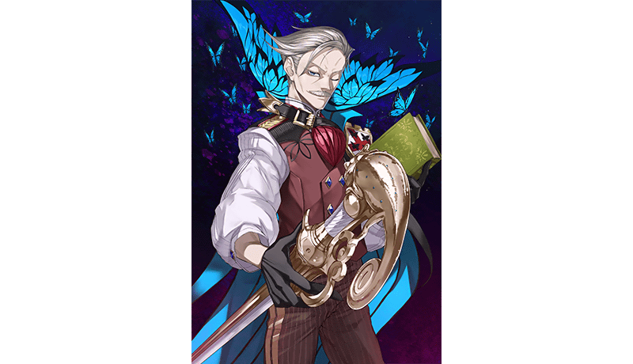
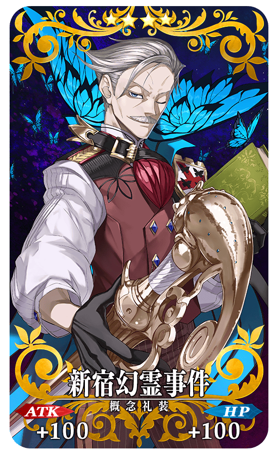
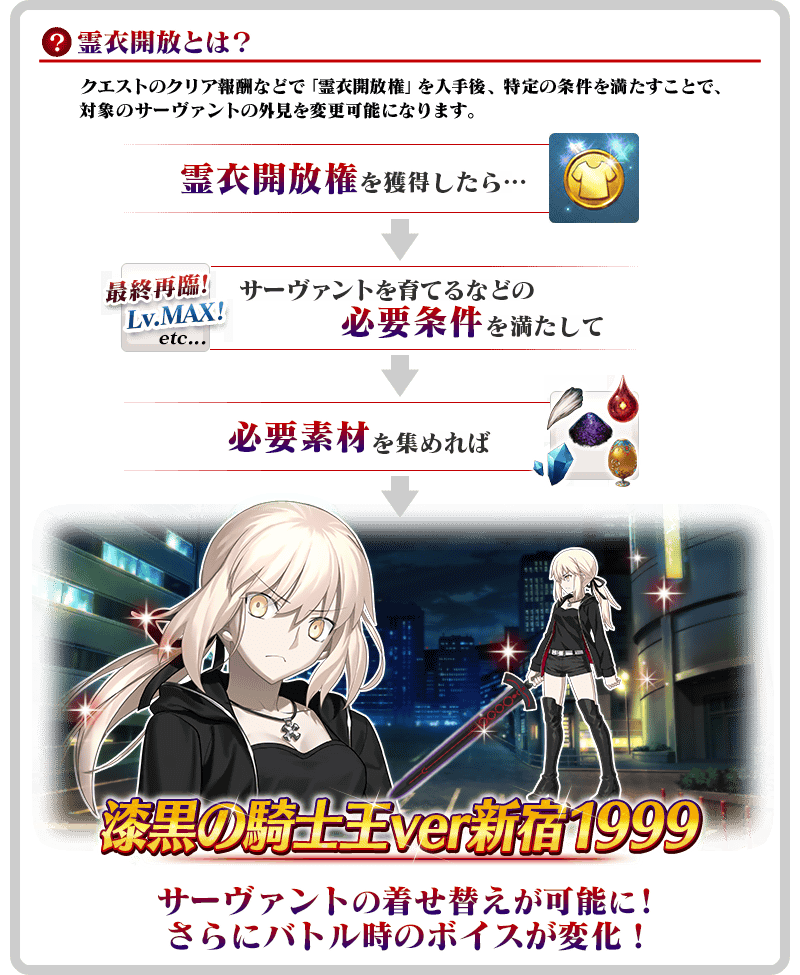
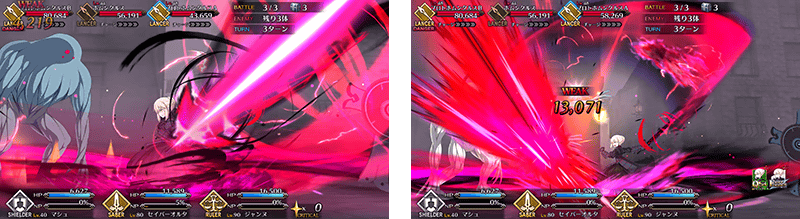
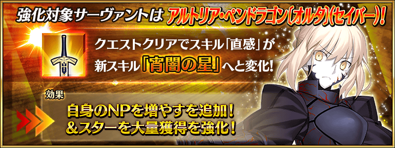

於「Fate/Grand Order」1.5部展開的「亞種特異點Ⅰ」的漫畫單行本第1集「Fate/Grand Order -Epic of Remnant- 亞種特異點Ⅰ 惡性隔絕魔境 新宿 新宿幻靈事件」，在2020年1月24日(五)發售！
為了記念單行本的發售，舉辦『「Fate/Grand Order -Epic of Remnant-」亞種特異點Ⅰ 惡性隔絕魔境 新宿 新宿幻靈事件漫畫發售記念宣傳活動』！
※本頁面皆為開發中圖片。會有與實際圖片相異的情況。
◆舉辦期間◆
2020年2月1日(六) 17:00～2月15日(六) 11:59
◆有關從者真名的注意◆
在2018年12月31日(二) 23:00以後新配信的主線故事及期間限定活動、一部份關卡、宣傳活動及召喚中，會顯示隱藏真名的對象從者真名。
※2018年12月31日(一) 22:59前已經配信的主線故事、復刻活動、一部份關卡中不在此限。
■亞種特異點Ⅰ 惡性隔絕魔境 新宿
新宿幻靈事件
漫畫第1集

發售日:2020年1月24日(五)
發售商:KADOKAWA
原作:TYPE-MOON
漫畫:佐々木少年
價格:638円(含稅)
※發售日因地區而異。
通過下述的期間中在迦勒底之門出現的「亞種特異點Ⅰ漫畫發售記念關卡」，得到關卡限定的概念禮裝吧！
◆舉辦期間◆
2020年2月1日(六) 17:00～2月15日(六) 11:59
◆關卡開放條件◆
通過「特異點F 炎上汙染都市 冬木」的御主對象
※請注意在「亞種特異點Ⅰ漫畫發售記念關卡」沒有文字冒險部份。
◆「亞種特異點Ⅰ漫畫發售記念關卡」限定概念禮裝◆
|  |
★★★★SR |
「★4(SR)阿爾托莉亞・潘德拉剛〔Alter〕(Saber)」的靈衣開放權在達文西工房的「魔力稜鏡交換」追加！
用魔力稜鏡1000個的話，可入手上述靈衣開放權。
另外，想要靈衣開放的話，除了靈衣開放權外必須再加上一些開放條件。
◆追加時間◆
2020年2月1日(六) 17:00～
※在「魔力稜鏡交換」追加的靈衣「漆黑騎士王ver新宿1999」開放權為永久，沒有交換期限。
◆有關靈衣開放權的注意◆
※本次追加的「★4(SR)阿爾托莉亞・潘德拉剛〔Alter〕(Saber)」的靈衣會伴随外觀變化一部份語音。
※請注意未持有「★4(SR)阿爾托莉亞・潘德拉剛〔Alter〕(Saber)」的情況，可入手靈衣開放權，但無法進行靈衣開放。
◆追加道具(永久)◆
靈衣「漆黑騎士王ver新宿1999」開放權
| 追加道具 | 能交換次數 | 1次交換所需的 魔力稜鏡數 |
|---|---|---|
| 靈衣「漆黑騎士王ver新宿1999」 開放權 |
1次 | 1000個 |


「靈衣開放」是自強化畫面進行。
※「靈衣開放」後會自動切換戰鬥角色和圖示。若想回到「靈衣開放」前的狀態和變成其他再臨階段的情況，可自從者詳細畫面變更。 ※進行「靈衣開放」也不會對職階和數值等有所變化。
翻新於「Fate/Grand Order -Epic of Remnant- 亞種特異點Ⅰ 惡性隔絕魔境 新宿 新宿幻靈事件」活躍的「★4(SR)阿爾托莉亞・潘德拉剛〔Alter〕(Saber)」攻擊演出！
※只限普通攻擊的翻新。寶具演出沒有變更。
◆實施時間◆
2020年2月1日(六) 17:00～

介紹開放靈衣「漆黑騎士王ver新宿1999」的「★4(SR)阿爾托莉亞・潘德拉剛〔Alter〕(Saber)」寶具演出！
在「Fate/Grand Order」官方網站內的公告中，以影片公開寶具演出，敬請確認。
強化「★4(SR)阿爾托莉亞・潘德拉剛〔Alter〕(Saber)」的特別關卡「從者強化關卡」，在迦勒底之門常駐追加。
不僅進行對象從者的強化，也可獲得聖晶石做為關卡通過報酬。
※請注意在從者強化關卡沒有文字冒險部份。
◆追加時間◆
2020年2月1日(六) 17:00～
◆開放條件◆
持有的強化對象從者，必須使其最終再臨。
※未持有對象從者的話，不會出現關卡。
※關卡沒有舉辦期限。

下述的期間中，在進行「亞種特異點Ⅰ」關聯從者的強化時，大成功(經驗值2倍加成)・極大成功(經驗值3倍加成)的發生率以期間限定變成2倍！
請務必藉此機會強化對象從者吧！
◆舉辦期間◆
2020年2月1日(六) 17:00～2月8日(六) 11:59
◆對象從者◆
| 職階 | 稀有度 | 從者名 |
|---|---|---|
| Saber | ★★★★ | 阿爾托莉亞・潘德拉剛〔Alter〕 |
| Archer | ★★★★★ | 詹姆斯・莫里亞蒂(新宿的Archer) |
| ★★★★ | Emiya〔Alter〕 | |
| Caster | ★★ | 威廉・莎士比亞 |
| ★★ | 漢斯・克里斯蒂安・安徒生 | |
| Assassin | ★★★★ | 燕青(新宿的Assassin) |
| ★★ | 歌劇魅影 | |
| Ruler | ★★★★★ | 夏洛克・福爾摩斯 |
| Avenger | ★★★★★ | 巖窟王 愛德蒙・唐泰斯 |
| ★★★★★ | 貞德〔Alter〕 | |
| ★★★★ | 海森・羅伯(新宿的Avenger) |

下述的期間中，在關卡開始時的支援選擇其他御主的「亞種特異點Ⅰ」關聯從者的情況與其他御主選擇自己的關聯從者當支援的情況，友情點數的獲得量變成2倍。
將好友和跟隨的御主等做為支援能選擇從者和概念禮裝的編成列入考量，藉此機會入手更多友情點數吧
◆舉辦期間◆
2020年2月1日(六) 17:00～2月8日(六) 11:59
◆對象從者◆
| 職階 | 稀有度 | 從者名 |
|---|---|---|
| Saber | ★★★★ | 阿爾托莉亞・潘德拉剛〔Alter〕 |
| Archer | ★★★★★ | 詹姆斯・莫里亞蒂(新宿的Archer) |
| ★★★★ | Emiya〔Alter〕 | |
| Caster | ★★ | 威廉・莎士比亞 |
| ★★ | 漢斯・克里斯蒂安・安徒生 | |
| Assassin | ★★★★ | 燕青(新宿的Assassin) |
| ★★ | 歌劇魅影 | |
| Ruler | ★★★★★ | 夏洛克・福爾摩斯 |
| Avenger | ★★★★★ | 巖窟王 愛德蒙・唐泰斯 |
| ★★★★★ | 貞德〔Alter〕 | |
| ★★★★ | 海森・羅伯(新宿的Avenger) |
※非好友的御主也是も友情點數獲得量2倍的對象。 ※請注意NPC從者即使是對象從者也在友情點數獲得量2倍的對象外。
其他還有，追加靈衣開放權、翻新攻擊演出翻新「★4(SR)阿爾托莉亞・潘德拉剛〔Alter〕(Saber)」登場的期間限定「亞種特異點Ⅰ漫畫發售記念Pick Up召喚(每日交替)」同時舉辦！